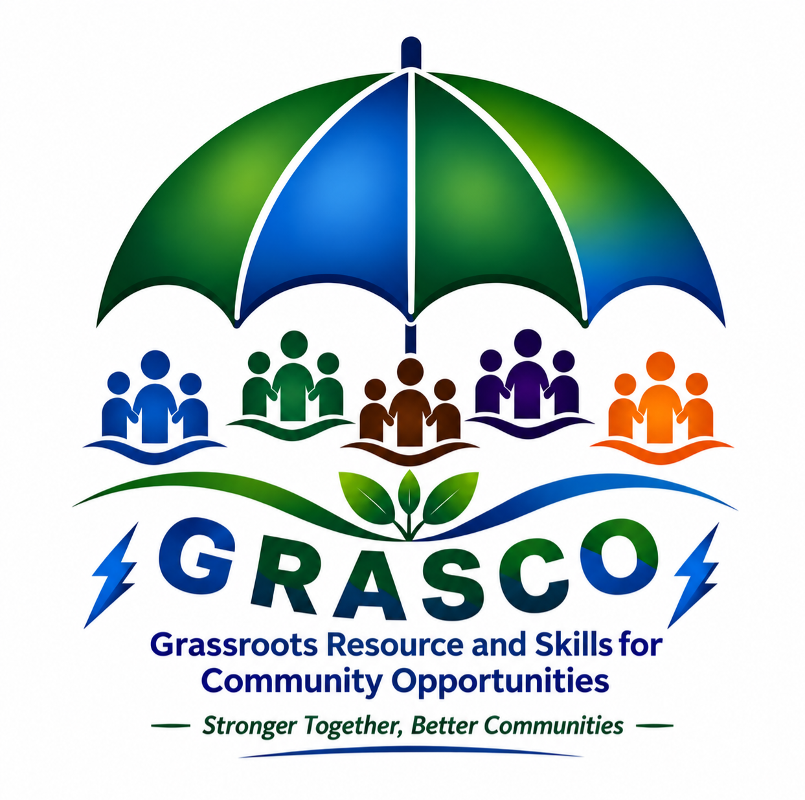

Grassroots Resource and Skills for Community Opportunities
Learn About GRASCO Verify MembershipGRASCO works to strengthen community self-help groups through capacity building, leadership and governance development, financial discipline, practical skills, market linkages and sustainable community enterprise development.
Practical training for community group leaders and members.
Guidance to improve organization, planning and performance.
Connecting community enterprises with opportunities and partners.
Support for accountable leadership and good governance.
GRASCO works through a structured grassroots network connecting community leadership, local coordination and self-help groups.
Confirm a GRASCO member's registration details through the official verification service.
Open Member VerificationEmail: grasco.org@gmail.com
Mobile: 0722 636 868
Telephone: 041 779 998